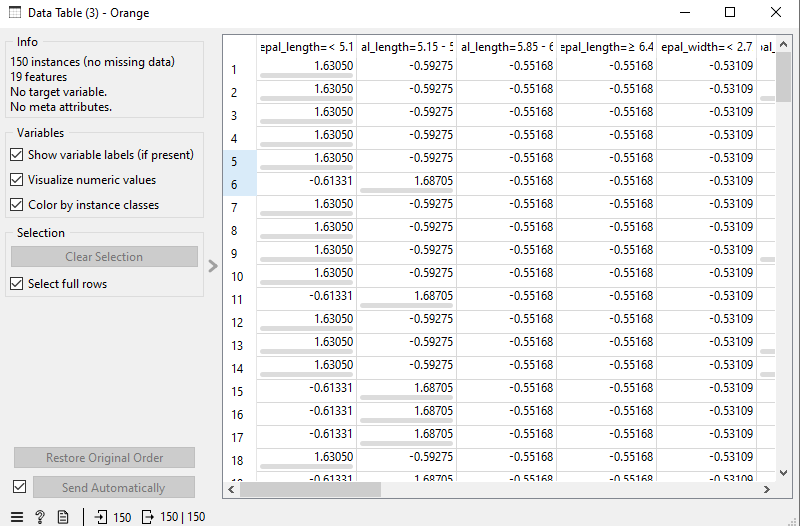

Pre-prosesing Data#
Dalam siklus penambangan data (data mining), Pre-prosesing atau pra-pemrosesan data adalah tahapan yang sangat krusial. Data mentah yang dikumpulkan dari dunia nyata sering kali tidak lengkap, tidak konsisten, atau memiliki format yang berbeda-beda. Pra-pemrosesan bertujuan untuk membersihkan, mengubah, dan mengintegrasikan data tersebut menjadi bentuk yang siap untuk dianalisis oleh algoritma machine learning.
Normalisasi#
Normalisasi adalah salah satu teknik pra-pemrosesan data yang digunakan untuk mengubah nilai kolom numerik ke dalam skala yang sama, tanpa mendistorsi perbedaan rentang nilai atau kehilangan informasi.
Normalisasi sangat penting untuk algoritma yang menghitung jarak antar data (seperti K-Nearest Neighbors atau K-Means Clustering). Jika suatu atribut memiliki rentang nilai yang sangat besar (misalnya gaji bulanan bernilai jutaan) dibandingkan atribut lain (misalnya umur bernilai puluhan), algoritma akan didominasi oleh atribut dengan rentang besar tersebut.
Berikut adalah tiga metode normalisasi yang sering digunakan:
1. Min-Max Normalization#
Min-Max Normalization melakukan transformasi linear pada data asli. Teknik ini mengubah nilai data \(v\) dari suatu atribut \(A\) agar berada dalam rentang spesifik yang baru, biasanya antara 0 dan 1 (atau rentang lain seperti -1 hingga 1).
Rumus Min-Max Normalization adalah sebagai berikut:
Jika rentang baru yang diinginkan adalah
(yang paling umum digunakan), maka rumusnya disederhanakan menjadi:
Keterangan:
\(v'\) = Nilai baru setelah normalisasi
\(v\) = Nilai asli data
\(\min_A\) = Nilai minimum dari atribut \(A\)
\(\max_A\) = Nilai maksimum dari atribut \(A\)
\(new\_max_A\) = Batas atas rentang baru (misal: 1)
\(new\_min_A\) = Batas bawah rentang baru (misal: 0)
2. Z-Score Normalization (Standardization)#
Z-Score Normalization atau sering juga disebut Standardization, mengubah data berdasarkan nilai rata-rata (mean) dan standar deviasi dari atribut tersebut. Teknik ini sangat berguna ketika rentang nilai maksimum dan minimum dari data tidak diketahui secara pasti, atau ketika data memiliki banyak outlier (pencilan).
Hasil dari Z-score akan membuat data memiliki rata-rata bernilai 0 dan standar deviasi bernilai 1.
Rumus Z-Score Normalization:
Keterangan:
\(v'\) = Nilai baru setelah normalisasi
\(v\) = Nilai asli data
\(\mu_A\) = Nilai rata-rata (mean) dari atribut \(A\)
\(\sigma_A\) = Standar deviasi dari atribut \(A\)
3. Decimal Scaling Normalization#
Decimal Scaling menormalisasi data dengan cara memindahkan titik desimal dari nilai atribut \(A\). Jumlah perpindahan titik desimal bergantung pada nilai absolut maksimum dari atribut tersebut. Hasil akhirnya akan membuat semua nilai berada pada rentang antara -1 dan 1.
Rumus Decimal Scaling:
Di mana \(j\) adalah bilangan bulat (integer) terkecil sedemikian sehingga nilai mutlak maksimum dari \(v'\) kurang dari 1, yaitu \(\max(|v'|) < 1\).
Contoh: Misalkan nilai dari suatu atribut \(A\) berkisar antara -986 hingga 917. Nilai mutlak maksimumnya adalah 986. Agar nilai ini menjadi kurang dari 1 (yaitu 0.986), kita perlu membagi dengan 1000 (\(10^3\)). Oleh karena itu, nilai \(j = 3\), dan rumusnya menjadi \(v' = v / 1000\).
Implementasi Normalisasi di Orange Data Mining#
Pada aplikasi Orange Data Mining, proses normalisasi data dapat dilakukan dengan sangat mudah menggunakan widget Preprocess. Berikut adalah langkah-langkah penerapannya:
1. Import Dataset#
Gunakan widget File untuk memasukkan dataset Anda. Pastikan dataset tersebut memiliki atribut/kolom numerik yang rentang nilainya bervariasi dan perlu dinormalisasi.
2. Gunakan Widget Preprocess#
Tambahkan widget Preprocess ke dalam kanvas. Hubungkan output dari widget File ke input widget Preprocess. Widget ini merupakan pusat berbagai macam alat pra-pemrosesan data di Orange.
3. Atur Metode Normalisasi#
Klik ganda pada widget Preprocess untuk membuka jendela pengaturannya:
Pada menu daftar operasi di sebelah kiri, cari dan klik Normalize Features untuk menambahkannya ke daftar operasi aktif di sebelah kanan.
Setelah ditambahkan, Anda akan melihat beberapa opsi algoritma normalisasi yang tersedia secara bawaan:
Standardize (\(\mu=0, \sigma=1\)): Opsi ini merupakan implementasi dari metode Z-Score Normalization. Data akan diubah sehingga memiliki nilai rata-rata 0 dan standar deviasi 1.
Scale to interval [0, 1]: Opsi ini merupakan implementasi dari metode Min-Max Normalization. Skala data akan diperkecil agar pas berada di dalam rentang 0 hingga 1. (Anda juga bisa mengubah intervalnya menjadi [-1, 1]) (Catatan: Metode Decimal Scaling secara spesifik tidak tersedia sebagai tombol instan di menu ini karena jarang digunakan dibandingkan Z-Score dan Min-Max, namun prinsipnya tetap sama yaitu memperkecil rentang skala data).
4. Evaluasi Hasil Normalisasi#
Tambahkan widget Data Table dan hubungkan output dari widget Preprocess ke Data Table tersebut.
Buka Data Table untuk melihat perbandingannya. Anda akan menyadari bahwa kolom-kolom numerik (seperti Umur, Gaji, dll.) yang awalnya memiliki puluhan, ribuan, atau jutaan digit, kini nilainya sudah seragam menjadi desimal kecil (misalnya antara 0 dan 1) tergantung metode yang Anda pilih pada langkah sebelumnya.
